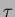
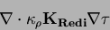
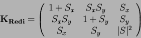
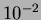
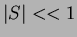
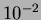
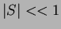
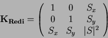

The Redi scheme diffuses tracers along isopycnals and introduces a
term in the tendency (rhs) of such a tracer (here ) of the form:
|  | (1) |
|  | (2) |
The first point to note is that a typical slope in the ocean interior
is small, say of the order  . A maximum slope might be of
order  and only exceeds such in unstratified regions where
the slope is ill defined. It is therefore justifiable, and
customary, to make the small slope approximation, . The Redi
projection tensor then becomes:
. A maximum slope might be of
order  and only exceeds such in unstratified regions where
the slope is ill defined. It is therefore justifiable, and
customary, to make the small slope approximation, . The Redi
projection tensor then becomes:
|  | (3) |